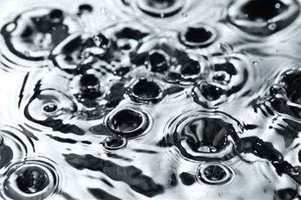

汞：无孔不入的治愈神药
罗马诸神，厕所考古学，流口水的梅毒病人，长生不老的超级追求者，被错用的双蛇杖
- 16世纪至20世纪初期之间使用的药品甘汞（calomel），名字来源于希腊语单词的“好”和“黑”（这样命名是描述它遇到氨气时会变黑的特性）。尽管这个名字的发音和焦糖（caramel）很像，但实际上二者没有半点相同。不过它偶尔也有些令人恶心的昵称，例如“蠕虫糖”“蠕虫巧克力”，因其可用来治疗寄生虫病。就其本身而言，甘汞似乎完全无害——它是一种无臭无味的白色粉末。但不要被骗了，如果说它无害，那你隔壁家那个藏着一地下室锯骨机、穿卡其色衣服的邻居也是无害的。
- 口服的甘汞，是一种强效的通便剂，这种委婉的说法是说它能将你肠子里的一切急剧地转移到厕所里。便秘一直都与各种疾病有关，所以，打开直肠的地狱之门，是拨乱反正、让一切好转的标志。 有些人相信，甘汞这个词中表示黑色的部分，来源于排出的黑色粪便，不过在过去，这被误认为是胆汁。能够允许胆汁“自由排出”，代表身体内部和谐、体液均衡的状态，这个理论可以追溯到希波克拉底和盖伦的时代。如果肠子里黑乎乎、黏巴巴的，那让身体摆脱这些毒素，不是更好吗？
- “排毒”也有其他表现形式——比方说，令人颜面尽失地大流口水，这实际上是汞中毒的症状。这样看来，甘汞的消费者和患狂犬病的狗差不了多少。如果不好的东西通过大量的唾液排出体外，那样不是很好吗？16世纪时的帕拉塞尔苏斯相信，有效（或者说有毒）剂量的汞，能促使产生至少3品脱的唾液。这真是洪水一样的口水啊。因此，曾经有一段时间，频繁跑厕所、吐出几加仑的痰，就是很多疾病的治疗手段，医生们开药时都会选择甘汞。